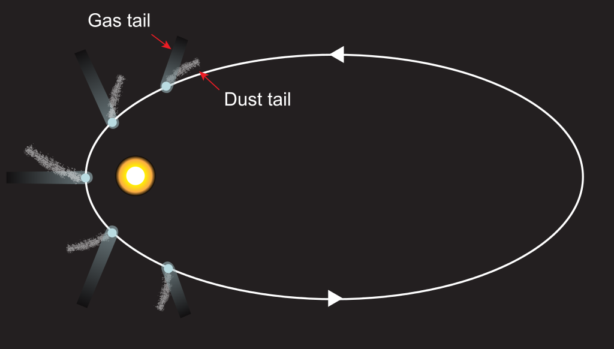

Physical Characteristics
Nucleus
The solid, core structure of a comet is known as the nucleus. Cometary nuclei are composed of an amalgamation of rock, dust, water ice, and frozen carbon dioxide, carbon monoxide, methane, and ammonia. As such, they are popularly described as "dirty snowballs" after Fred Whipple's model. However, many comets have a higher dust content, leading them to be called "icy dirtballs". The term "icy dirtballs" arose after observation of Comet 9P/Tempel 1 collision with an "impactor" probe sent by NASA Deep Impact mission in July 2005. Research conducted in 2014 suggests that comets are like "deep fried ice cream", in that their surfaces are formed of dense crystalline ice mixed with organic compounds, while the interior ice is colder and less dense. The surface of the nucleus is generally dry, dusty or rocky, suggesting that the ices are hidden beneath a surface crust several metres thick. In addition to the gases already mentioned, the nuclei contain a variety of organic compounds, which may include methanol, hydrogen cyanide, formaldehyde, ethanol, ethane, and perhaps more complex molecules such as long-chain hydrocarbons and amino acids. In 2009, it was confirmed that the amino acid glycine had been found in the comet dust recovered by NASA's Stardust mission. In August 2011, a report, based on NASA studies of meteorites found on Earth, was published suggesting DNA and RNA components (adenine, guanine, and related organic molecules) may have been formed on asteroids and comets.
Coma
The streams of dust and gas thus released form a huge and extremely thin atmosphere around the comet called the "coma". The force exerted on the coma by the Sun's radiation pressure and solar wind cause an enormous "tail" to form pointing away from the Sun.[48] The coma is generally made of water and dust, with water making up to 90% of the volatiles that outflow from the nucleus when the comet is within 3 to 4 astronomical units (450,000,000 to 600,000,000 km; 280,000,000 to 370,000,000 mi) of the Sun. The H 2O parent molecule is destroyed primarily through photodissociation and to a much smaller extent photoionization, with the solar wind playing a minor role in the destruction of water compared to photochemistry. Larger dust particles are left along the comet's orbital path whereas smaller particles are pushed away from the Sun into the comet's tail by light pressure. Although the solid nucleus of comets is generally less than 60 kilometers (37 mi) across, the coma may be thousands or millions of kilometers across, sometimes becoming larger than the Sun. For example, about a month after an outburst in October 2007, comet 17P/Holmes briefly had a tenuous dust atmosphere larger than the Sun. The Great Comet of 1811 also had a coma roughly the diameter of the Sun. Even though the coma can become quite large, its size can decrease about the time it crosses the orbit of Mars around 1.5 astronomical units (220,000,000 km; 140,000,000 mi) from the Sun. At this distance the solar wind becomes strong enough to blow the gas and dust away from the coma, and in doing so enlarging the tail. Ion tails have been observed to extend one astronomical unit (150 million km) or more
Bow Shocks
Bow shocks are form as a result of the interaction between the solar wind and the cometary ionosphere, which is created by ionization of gases in the coma. As the comet approaches the Sun, increasing outgassing rates cause the coma to expand, and the sunlight ionizes gases in the coma. When the solar wind passes through this ion coma, the bow shock appears. The first observations were made in the 1980s and 90s as several spacecraft flew by comets 21P/Giacobini–Zinner, 1P/Halley, and 26P/Grigg–Skjellerup. It was then found that the bow shocks at comets are wider and more gradual than the sharp planetary bow shocks seen at, for example, Earth. These observations were all made near perihelion when the bow shocks already were fully developed. The Rosetta spacecraft observed the bow shock at comet 67P/Churyumov–Gerasimenko at an early stage of bow shock development when the outgassing increased during the comet's journey toward the Sun. This young bow shock was called the "infant bow shock". The infant bow shock is asymmetric and, relative to the distance to the nucleus, wider than fully developed bow shocks.
Tail
In the outer Solar System, comets remain frozen and inactive and are extremely difficult or impossible to detect from Earth due to their small size. Statistical detections of inactive comet nuclei in the Kuiper belt have been reported from observations by the Hubble Space Telescope but these detections have been questioned. As a comet approaches the inner Solar System, solar radiation causes the volatile materials within the comet to vaporize and stream out of the nucleus, carrying dust away with them. The streams of dust and gas each form their own distinct tail, pointing in slightly different directions. The tail of dust is left behind in the comet's orbit in such a manner that it often forms a curved tail called the type II or dust tail. At the same time, the ion or type I tail, made of gases, always points directly away from the Sun because this gas is more strongly affected by the solar wind than is dust, following magnetic field lines rather than an orbital trajectory. On occasions—such as when Earth passes through a comet's orbital plane, the antitail, pointing in the opposite direction to the ion and dust tails, may be seen.
Jets
Uneven heating can cause newly generated gases to break out of a weak spot on the surface of comet's nucleus, like a geyser. These streams of gas and dust can cause the nucleus to spin, and even split apart. In 2010 it was revealed dry ice (frozen carbon dioxide) can power jets of material flowing out of a comet nucleus. Infrared imaging of Hartley 2 shows such jets exiting and carrying with it dust grains into the coma.
{kind=link}